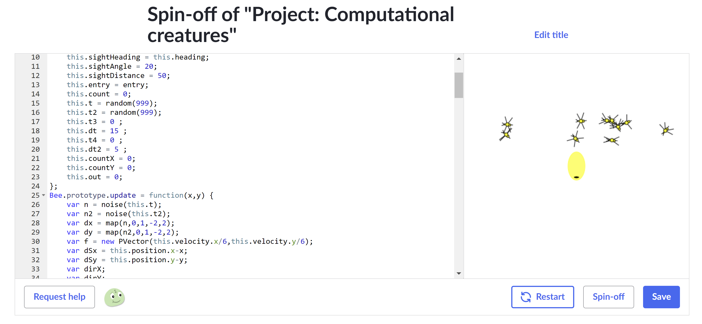
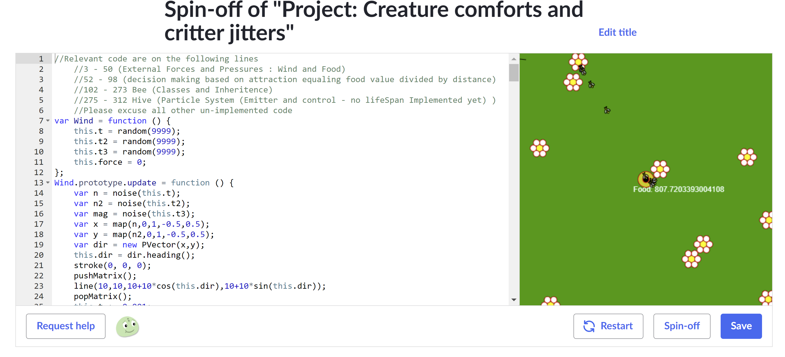

Stimulation via simulation
Stimulation via simulation

From the simple implementation of a pseudo table-tennis-like game to the predictive software that monitors and attempts to forecast the weather, we use simulations every day and more often than we might realize. Even within ourselves we utilize a type of simulation in our imaginations which allows us to picture a future state and organize a plan to achieve that, like choosing what path to take to reach a certain place. The possession of an accurate simulation is perhaps one of the most essential elements of any type of human progress and human planning but we humans take a peculiar interest in applying simulations to our recreational activities merely out of intuition.
When we see an object rise, relative to our perception, we might understandably expect it to respect gravity and fall, especially when we are not explicitly told to suspend our disbelief or when we are not made aware of the circumstances which might change those perceptions and resultant expectations; like if the game or image in-question was set or captured in "space." In these cases, we pursue the more accurate simulation to encourage a sense of immersion, or the ability to successfully insert your perception believably into that illusion, if only at least while you're participating with or viewing it.
This impulse and aesthetic preference was encouraged in me by Khan Academy's course focusing on simulation. One of the first projects is to create a static image of a mountain range drawn using a noise function, also called perlin noise named for it's creator. In the subsequent section's project we are instructed to design a simulation of an actual dynamic creature.
"In the beginning...": A creation story
The perlin noise function allows the programmer to produce pseudo random numbers in a pseudo-continuous way, which gives the impression of a naturally "randomly" fluctuating value. Using it, one can draw a randomly generated silhouette of a mountain range or, as in this case, can give the illusion of the changing values of wind speed as gusts act on an object. It can even give the illusion of the object making conscious choices when the noise function is used to determine the objects "heading" if it has a discernible front and back. This particular project simulated bees in-flight, all the bees being part of a larger "swarm" object, which are attracted toward the cursor location relative to the display canvas on the right. Each bee tries to go to the swarms target but each one is also affected by the noise and so they all seem to fan out randomly.
https://www.khanacademy.org/computer-programming/spin-off-of-project-computational-creatures/3308660215Evolution!
The next project introduced a dynamic element to the complexity by forcing interactions between creatures. The project itself was much more open ended and represented the penultimate project of the course, or the "capstone" if you prefer, and encouraged artistic interpretation of the instructions. Although I can say now that I had fully intended to include a much more dynamic interaction between two moving creatures, perhaps a hunter and prey as was suggested, I opted to implement a simple stationary food source to the creature I already had a working definition for.
I changed what the bees looked like to represent a honey bee, rather than the wasp swarm I was going for in the preceding project, and I added a bit more detail and complexity to it; each one has a flying and landed state and either flaps or steps to move. Each bee is a part of a higher level "hive" object and collects food from flowers and returns it to the hive. At a designated amount of food the hive creates a new bee, and each flower is randomly placed around the canvas. In hindsight, I should have continued by introducing some sort of predator along with implementing a simulation of "perception" so that the predator and prey could react to each other in a seemingly natural way.
https://www.khanacademy.org/computer-programming/spin-off-of-project-creature-comforts-and-critter-jitters/3557931665Regrets aside, the project was fun to do in my free-time from actual courses and reinforced it as a hobby; and even if I wanted to change it now I'd have to try to reverse-engineer everything because I wrote next to no comments explaining what I was doing. Ultimately, proceeding forward, I would always have some form of IDE on my computer, after I switched majors, or have one installed on my phones, which was immediately available at the time and in JavaScript. Looking back, had I never initially taken a computer science course as a requirement for Engineering I'd have never considered it as an option as a major and would probably not be a student at this point.